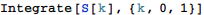

東京大学 1994年 理科 第3問
問題
x y z空間に置いて条件
を満たす点P(x,y,z)の全体からなる立体を考える。この立体の体積をVとし、0≤k≤1に対し、z軸と直行する平面z=kによる切り口の面積をS(k)とする。
解答
(1)
S(k)を求める。
| \[Piecewise] |
|
k→cos θに置換して
| \[Piecewise] |
|
の場合も含めて、S(k)は

と表せる。
(2)
求める体積VはS(k)をk=0から1まで積分したものであるから、


補足・感想
Vを直接計算することも可能。